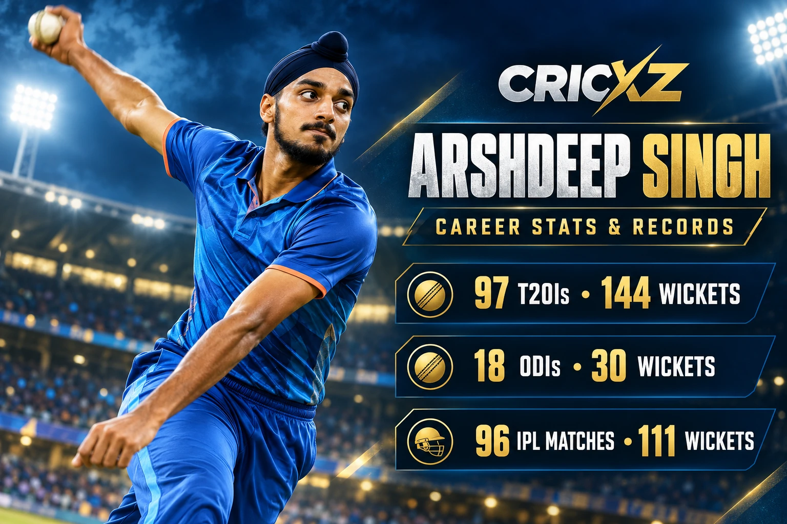
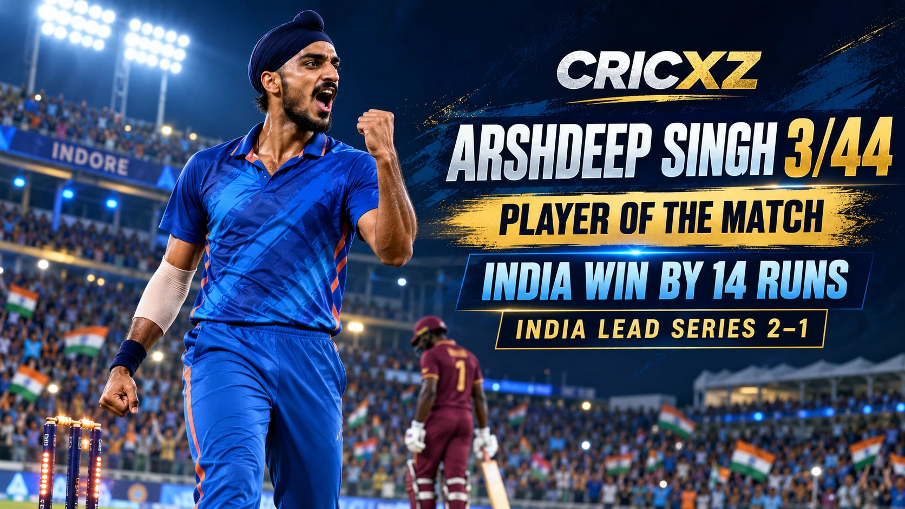

ODI Career
- Matches
- 18
- Innings
- 17
- Wickets
- 30
- Bowling average
- 25.17
- Economy rate
- 5.49
- Best bowling
- 5/37
- Five-wicket hauls
- 1

Arshdeep Singh is an India left-arm fast-medium bowler known for early movement, wide yorkers and composure in high-pressure overs. A member of India's 2024 T20 World Cup-winning side, he has developed into one of the country's leading T20I wicket-takers.
Career statistics are current through the third India–West Indies T20I on 11 October 2026.
Arshdeep remains an active international player, so these figures may change after his next appearance.
Arshdeep progressed from India's 2018 Under-19 World Cup-winning squad to Punjab's senior side and the IPL. His left-arm angle, control with the new ball and ability to execute yorkers established him as a regular in India's white-ball plans.

Arshdeep took 3/44 in the third T20I against West Indies at Indore on 11 October 2026. He removed captain Shai Hope with the new ball and returned for two late wickets as India defended 223 and won by 14 runs.
The spell earned him Player of the Match and helped India move 2–1 ahead in the five-match series. Read the full report of India's third-T20I victory in Indore.
Arshdeep was central to India's title-winning 2024 T20 World Cup campaign, finishing as the tournament's joint-leading wicket-taker with 17 wickets. His ability to strike in the powerplay and close innings at the death made him a key part of the bowling attack.
He had already shown his tournament temperament at the 2022 T20 World Cup, where he collected 10 wickets in six matches and finished as India's leading wicket-taker.
25 November 2022
Made his ODI debut against New Zealand at Eden Park, Auckland.
7 July 2022
Made his T20I debut against England at Southampton.
16 April 2019
Made his IPL debut for Punjab Kings against Rajasthan Royals.
Built one of India's strongest wicket tallies in the shortest international format.
Finished joint-highest among all bowlers in India's title-winning campaign.
Recorded a five-wicket haul as his best performance in 50-over internationals.
Registered his first five-wicket haul in T20 international cricket.
Claimed three wickets and the Player-of-the-Match award against West Indies.
Was part of India's victorious Under-19 World Cup squad.
Played a major bowling role as India lifted the global T20 title.
Recognised by the ICC after an outstanding year in the shortest format.
Provides India with left-arm variety across the powerplay and death overs.
Developed his reputation through sustained responsibility for Punjab Kings.
Career statistics and recent-match details were checked on 12 October 2026.
Read how Arshdeep's 3/44 helped India win in Indore, or browse all CricXZ player profiles.